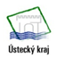

ADAPT2DC partnership and contacts
Lead Partner
Thuringian Ministry for Building, Regional Development and Infrastrucure
- Further information: www.thueringen.de/de/tmblv/
PP2
Leibniz Institute for Regional Geography
- Further information: www.ifl-leipzig.de
PP4
Institute of Sociology of the Academy of Sciences of the Czech Republic
- Further information: www.soc.cas.cz
PP5
- Further information: www.kr-ustecky.cz
- 
Usti Region
PP8
Észak-alföld Regional Development Agency Non-profit Limited Company
- Further information: www.eszakalfold.hu
PP9
UNCEM - Unione Nazionale Comuni, Comunità ed Enti Montani – Delegazione Piemontese
- Further information: www.uncem.piemonte.it
PP10
University of Economics Katowice<
- Further information: www.ue.katowice.pl
PP11
The Malopolska Region
- Further information: www.malopolskie.pl
PP12
Municipality of Maribor
- Further information: www.maribor.si
PP13
Urban Planning Institute of the Republic of Slovenia
- Further information: www.uirs.si
PP14
Office for National Economic Planning
- Further information: www.nth.gov.hu